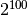

Paired permutation tests¶
To illustrate the paired two-sample permutation test, consider the following randomized, controlled experiment. You suspect a specific treatment will increase the growth rate of a certain type of cell. To test this hypothesis, you clone 100 cells. Now there are 200 cells composed of 100 pairs of identical clones. For each cloned pair you randomly assign one to treatment, with probability 1/2, independently across the 100 pairs. At the end of the treatment, you measure the growth rate for all the cells. The null hypothesis is that treatment has no effect. If that is true, then the assignment of a clone to treatment amounts to an arbitrary label that has nothing to do with the measured response. So, given the responses within each pair (but not the knowledge of which clone in each pair had which response), it would have been just as likely to observe the same numbers but with flipped labels within each pair. We could generate new hypothetical datasets from the observed data by assigning the treatment and control labels for all the cloned pairs independently. This yields a total of  total datasets (including the observed data and all the hypothetical datasets that you generated), all equally likely to have occurred under the null, conditioning on the observed data (but not the labeling).
The standard parametric approach to this problem is the paired  -test,
since the cloned cells are presumably more similar to each other than to
another randomly chosen cell (and thus more readily compared). The paired
-test assumes that, if the null hypothesis is true, the differences in
response between each pair of clones are independently and identically (iid)
normally distributed with mean zero and unknown variance. The test statistic is
the mean of the differences between each cloned pair divided by the standard
error of these differences. Under these assumptions, the test statistic is
distributed as a -distribution with
-test,
since the cloned cells are presumably more similar to each other than to
another randomly chosen cell (and thus more readily compared). The paired
-test assumes that, if the null hypothesis is true, the differences in
response between each pair of clones are independently and identically (iid)
normally distributed with mean zero and unknown variance. The test statistic is
the mean of the differences between each cloned pair divided by the standard
error of these differences. Under these assumptions, the test statistic is
distributed as a -distribution with  degrees of freedom.
This means you can calculate the test statistic and then read off the from the
-distribution. If the is below some prespecified critical value
degrees of freedom.
This means you can calculate the test statistic and then read off the from the
-distribution. If the is below some prespecified critical value
 , then you reject the null. If the true generative model for the
data is not iid normal, however, the probability of rejecting the null
hypothesis can be quite different from even if treatment has no
effect.
, then you reject the null. If the true generative model for the
data is not iid normal, however, the probability of rejecting the null
hypothesis can be quite different from even if treatment has no
effect.
A permutation version of the -test can avoid that vulnerability: one
can use the -statistic as the test statistic, but instead of selecting
the critical value on the basis of Student’s -distribution, one uses
the distribution of the statistic under the permutation distribution. Of
course, other test statistics could be used instead; the test statistic should
be sensitive to the nature of the alternative hypothesis, to ensure that the
test has power against the alternatives the science suggests are relevant.
Regardless of which test statistic you choose for your permutation test, if the
problem size is not too large then you enumerate all equally likely
possibilities under the null given the observed data. If the problem is too
large to feasibly enumerate, then you use a suitably large, iid random sample
from the exact distribution just described, by selecting permutations uniformly
at random and applying the test statistic to those permutations. As you
increase the number of samples, you will get increasingly better (in
probability) approximations of the exact distribution of the test statistic
under the null. The null conditional probability of any event can be estimated
as the proportion of random permutations for which the event occurs, and the
sampling variability of that estimate can be characterized exactly, for
instance, using binomial tests (since the distribution of the number of times
the event occurs is Binomial with  equal to the number of samples and
equal to the number of samples and
 the unknown probability to be estimated).
the unknown probability to be estimated).
Example¶
We’ll generate some fake data to demonstrate the paired two-sample problem. We’ll follow the cloned cells example above. The controls have a response that is distributed uniformly between 0 and 10. There is random variation among the cells, so the difference between responses in a pair is normally distributed with 0 mean. In the first case, suppose we give the treatment group an ineffective treatment, so there is no treatment effect. The treated cell is equally likely to have a response that is larger or smaller than it’s clone’s response.
>>> from __future__ import print_function
>>> import numpy as np
>>> from numpy.random import RandomState
>>> from permute.core import one_sample
>>> prng = RandomState(42)
>>> control = prng.uniform(low = 0, high=10, size=100)
>>> ineffective_treatment = control + prng.normal(loc=0, scale=1, size=100)
>>> (p, diff_means) = one_sample(ineffective_treatment, control, stat='mean', seed=prng)
>>> print("P-value: ", p)
P-value: 0.50726
>>> print("Difference in means:", diff_means)
Difference in means: -0.00108036016736
Now, suppose we give a new treatment that has a constant effect that increases the cell’s response by 1.
>>> good_treatment = control + prng.normal(loc=1, scale=1, size=100)
>>> (p, diff_means) = one_sample(good_treatment, control, stat='mean', seed=prng)
>>> print("P-value: ", p)
P-value: 0.0
>>> print("Difference in means:", diff_means)
Difference in means: 1.08009705107
one_sample is written to either take in two arguments and test the difference between pairs as we’ve done above, or to take in a single argument and test whether that variable is centered around 0. Below, we call one_sample in that manner, supplying the difference in response within pairs, and get the same results.
>>> paired_differences = good_treatment - control
>>> (p, diff_means) = one_sample(paired_differences, stat='mean', seed = prng)
>>> print("P-value: ", p)
P-value: 0.0
>>> print("Difference in means:", diff_means)
Difference in means: 1.08009705107